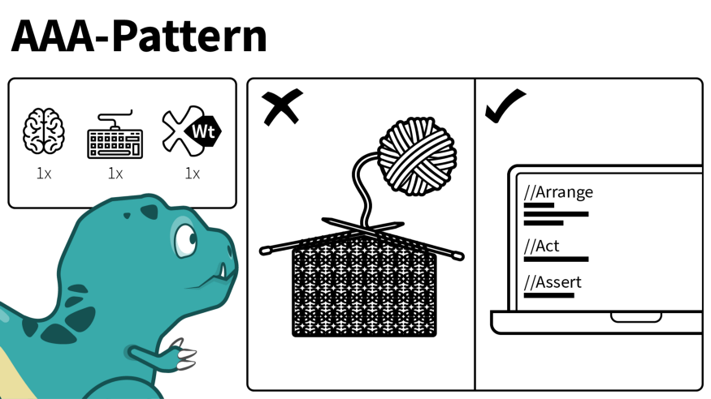

UNIT TESTING
Unit testing is a method that is used to test programs and applications to see if they function according to the clients’ specifications. Unit testing involves testing individual components of the software program or application. The main purpose behind this is to check that all the individual parts are working as intended. A unit is known as the smallest possible component of software that can be tested. Generally, it has a few inputs and a single output.
There are two main types of unit testing: manual and automated. The automated method is the most preferred as it is faster and more accurate, but performing this task manually is also an option. The manual approach has a step-by-step instructional procedure that helps testers perform this task efficiently. The automated unit testing usually involves the developer first writing a section of the code in the application so that the function can be tested.
Process Of Unit Testing
The workflow of unit testing in software testing usually follows this framework: • Create the test cases • Review or rework • Baseline • Execute test cases
Advantages Of Unit Testing:
• The process becomes agile • Quality of Code • Facilitates Change • Provides Documentation • Debugging Process • Design • Reduce Costs
Importance Of Unit Testing
Automated unit tests reduce the number of bugs released in the production. The best unit testing will come from a developer very close to the project and writing unit tests helps some developers to understand the code better. It can often be a good way for new developers on the project to get to know code if it was written by someone else. For the best practice, all projects must be under unit testing, but normally it is used for larger projects. Smaller projects can still benefit from unit tests, but project managers and clients should evaluate the time needed to develop unit tests during the project

The Arrange, Act and Assert (AAA) Pattern
The AAA (Arrange-Act-Assert) pattern has become almost a standard across the industry. It suggests that you should divide your test method into three sections: arrange, act and assert. Each one of them only responsible for the part in which they are named after. So, the arrange section you only have code required to setup that specific test. Here objects would be created, mocks setup (if you are using one) and potentially expectations would be set. Then there is the Act, which should be the invocation of the method being tested. And on Assert you would simply check whether the expectations were met. AAA pattern does make the code quite well structured and easy to understand.
// arrange
var repository = Substitute.For
var client = new Client(repository);
// act
client.Save();
// assert
Test code, in the same way as production code, is supposed to be clean and self-explanatory. Preempting what you are going to do just adds unnecessary clutter. You can still have a clear distinction of the three steps by using spaces and indentation. Which are ultimately the key features the compiler provides you to structure your code.
Click here to go to the next page :- OOP's Concepts